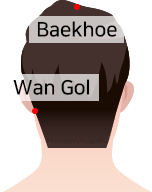
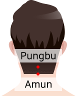
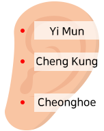

-
1. Hair loss self-diagnosis method
If any of the four below are included, get a professional diagnosis.
One, hold about 8 to 10 hairs with your fingers and pull them lightly. It is normal for one or two hairs to fall out, but if four or more are missing, it is likely alopecia.
Two, in general, about 50 to 80 hairs fall out during a day during daily life. If the number of hair loss per day is more than 100, it can be said that initial hair loss has progressed.
Three, check if there is a hair loss person in the family.
Fourth, if the scalp is itchy for more than 3 months and has a lot of dandruff, hair loss can be suspected.
-
2. Wash your hair for scalp health
Washing your hair cleans the scalp and hair dirt and waste accumulated during the day. However, incorrect shampooing habits can damage your scalp and cause hair loss.
The first thing to do for proper scalp and hair care is to choose a shampoo that suits your scalp and hair condition. Like the face, the scalp is also divided into dry, oily, and sensitive, so choose a shampoo that suits your scalp and hair type, and adjust how or how often you wash your hair. It is recommended to avoid shampoos or combination shampoos with strong chemical components, and to use weakly acidic shampoos (pH 5.5~5.7) using natural vegetable ingredients.
One of the habits that damage your scalp health is washing your hair with soap instead of shampoo. Strong alkaline soap combines with the metals in the water to create soapy grime, which severely irritates the scalp and promotes hair loss. In addition, it cleanses all the nutrients and basic sebum of the scalp to make dry scalp and hair.
In summary, you must use shampoo to wash your hair and rinse your hair separately from shampoo.
-
3. Hair care habits to prevent hair loss
1. When washing and drying hair
Use fingerprints, not nails, to reduce scalp damage.
2. Remove moisture after washing hair
When using a towel, remove moisture only to the extent that men press it firmly, and women use the towel to squeeze the hair. At this time, you should never pull your hair.
3. When brushing your hair after shampooing
Excessive combing is not good when your hair is wet and tangled a lot. Care should be taken as the hair may break or be pulled out during combing, causing tractional hair loss.
4. Dry your hair by drying
You can dry the scalp side with cold air, and dry the hair side with warm air. If you have the time, it is good to dry your scalp and hair in a cool air overall.
-
4. Massage method to prevent hair loss by investing 5 minutes a day
1. Gently press down the hairline to the temple (sunhyeol).

2. Acupressure is applied to the head of the head and the back of the ear concave and the humerus and humerus for 3 seconds.

3. Acupressure with your thumb and middle finger is acupressure for 3 seconds each, 3 seconds each.

4. Gently press the ear, Cheonggung, and hearing parts of the ear, then stimulate the entire ear with your thumb, fold the ear in half and press gently. Then pull your ears slightly from top to bottom.
* Taeyanghyeol, Baekhoe, and Wangol are blood spot to treat tension headaches. Shiatsu relieves muscle tension and relieves the aforementioned energy, so it is helpful in preventing and managing hair loss caused by stress or severe heat in the head.
* Poongbu and Amun are acupuncture points at the back of the neck to prevent dryness of the scalp and soothe the scalp.
* Acupressure in front of the ears, Amun, Cheonggung, and Cheonghoe from top to bottom, and pulling the auricles upward, sideways, and downwards will help the scalp health.
-
5. Scalp sauna to prevent hair loss in summer
The scalp sauna is good for preventing hair loss in summer by removing waste products.
1. Wet the scalp sufficiently with lukewarm water.
2. Apply foamy shampoo to the scalp and gently massage with finger prints for 3 minutes.
3. Take a foot bath for 3 minutes while wearing a hair cap.
* The temperature of the foot bath water should be 41~42℃. If you take a foot bath with shampoo on, the shampoo takes longer and improves cleansing power, but if the shampoo stays on the scalp for a long time, it may irritate it, so take care not to exceed 2-3 minutes.
4. Rinse your hair thoroughly.
-
6. Making apple green tea pack for healthy scalp in summer
Apple green tea pack helps maintain scalp health by lowering the heat of the scalp in summer.
- Ingredients: 1 apple, 3 tablespoons green tea powder
- How to make apple green tea pack
1. Grind 1 apple on a grater and make the juice.
2. Add 3 tablespoons of green tea powder and mix well.
(* Adjust the concentration so that it does not flow when applied to the scalp.)
3. Apply the apple green tea pack to the scalp and hair thoroughly and thoroughly.
4. Wrap it with a wrap so that the nutrients in the pack can be absorbed well and leave for 10 minutes.
5. Rinse thoroughly with lukewarm water so that no residue remains on the scalp.
-
7. Protein intake for shiny hair
The main component of hair is a protein called keratin. Protein plays a role in regenerating and repairing tissues, and when protein is insufficient, our body puts the hair at rest to stockpile protein. Hair that lacks protein loses its shine after 2-3 months and breaks easily, leading to hair loss in severe cases. Therefore, it is essential to consume protein to grow shiny and strong hair.
It is better to consume vegetable proteins such as fish, tofu, and soybeans rather than animal proteins with a lot of cholesterol. Black sesame seeds that strengthen blood vessels and nourish the scalp, tofu that regulates male hormones that cause hair loss, and black beans that help strengthen liver function and blood circulation are good for keeping the scalp and hair healthy.
-
8. 7 dietary regimens for hair health
1. The intake rate of protein, carbohydrate and unsaturated fat consists of 30:40:30.
2. Eat green blue fish and vegetable protein.
3. Eat foods rich in vitamin C, meat, and fish for iron absorption.
4. Eat a lot of fruits and vegetables, and avoid instant foods and alcohol.
5. Oil uses vegetable, an essential fatty acid.
6. Eat three meals a day.
7. Stay away from food two hours before going to bed.
-
9. Life management method in case of acute hair loss
In most cases, acute hair loss had a cause that could deteriorate health within a few months. Therefore, it is of utmost importance to find the cause so that it does not get worse. For example, if it's because of a diet, you should quit.
In order to recover quickly when acute hair loss occurs, reduce stress and do light exercise like walking instead of excessive exercise. Go to bed before 12 o'clock, sleep enough for 7-8 hours or more, eat breakfast, and do not eat at night. In addition, it is good to eat enough vegetables or fruits rich in vitamins or minerals.